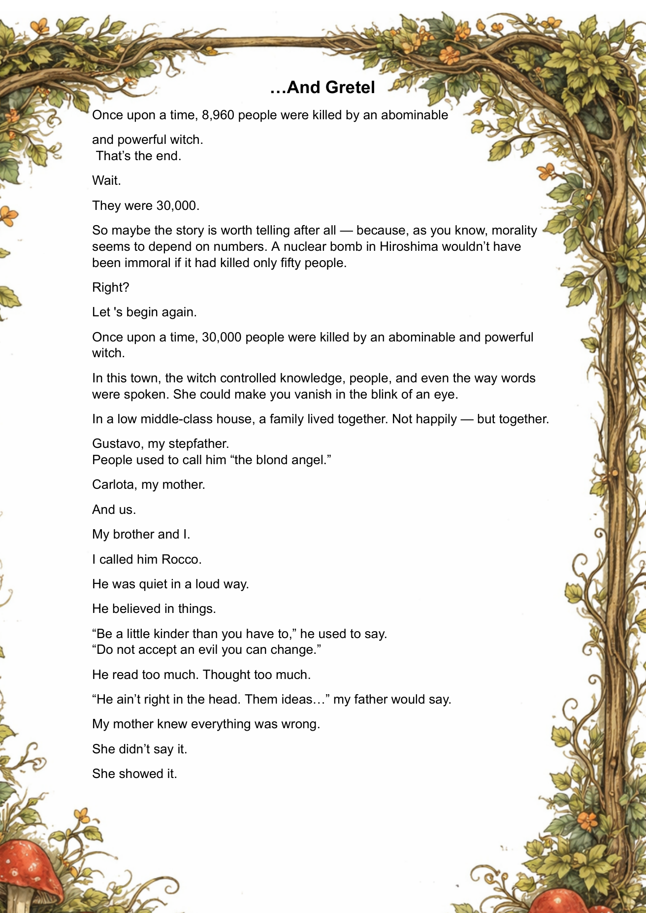
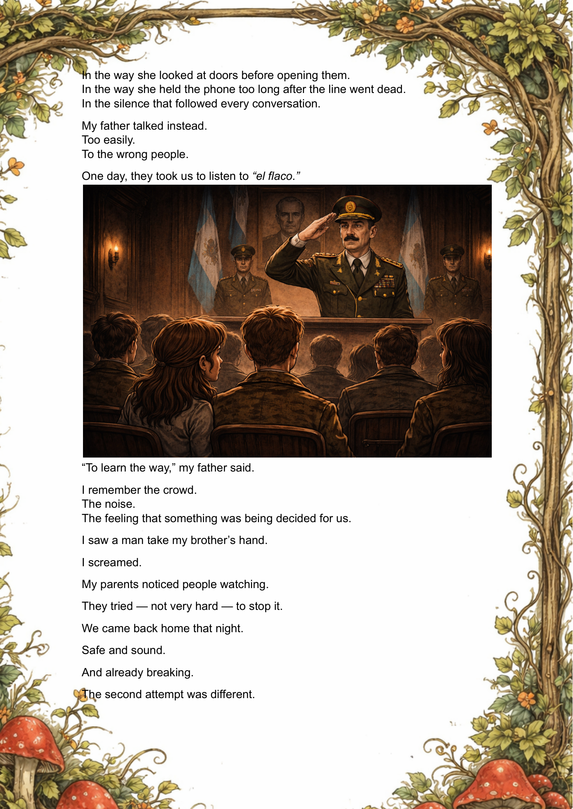
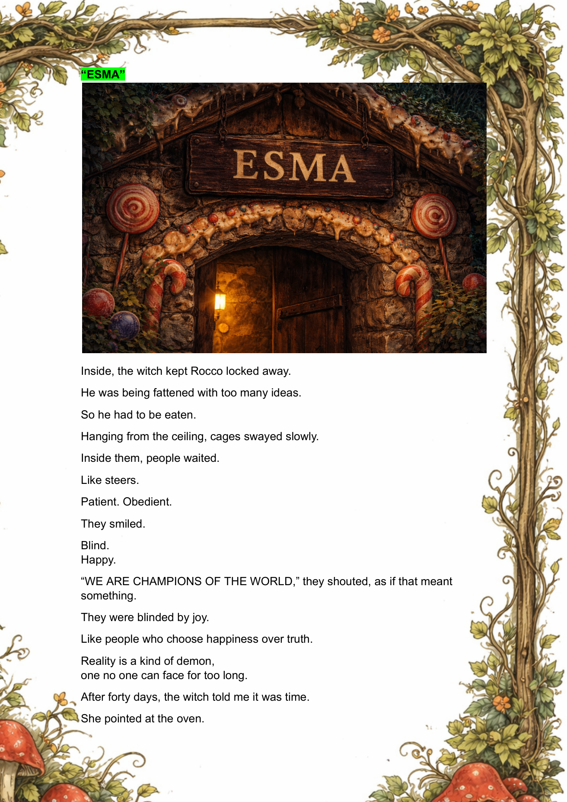

A dark fairy tale
...And Gretel
Memory, silence, disappearance, and what survives the fire.
Opening page
...And Gretel
Once upon a time, 30,000 people were killed by an abominable and powerful witch.
A fairy-tale retelling shaped by memory, disappearance, and the refusal to look away.






About this edition
A storybook shell for a darker memory
This version was rebuilt as a more advanced viewer: cleaner movement, better responsiveness, and a more natural book experience on both desktop and mobile.
“The world doesn’t change. You just learn to see it the way it is.”
Back cover
A storybook object for a tale that resists forgetting.
Optimized for VS Code + Live Server.